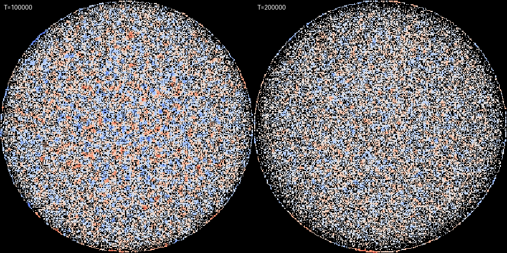

Фазовое разделение P1 (AP=AN=−2, RP=RN=−2, шум 0.8, mob 50, N=1 млн). Прогон запущен на 1 000 000 тактов, но остановлен на 245 000: структура вышла на плато.
| T | активных | фронт |
|---|---|---|
| 10 000 | 29 162 | 97.5 |
| 100 000 | 104 656 | 183.5 |
| 200 000 | 126 135 | 201.5 |
| 245 000 | 131 629 | 206.0 |
С 200k до 245k: активных +4%, фронт +2%. Экстраполяция к 1 млн даёт фронт ~250–260, то есть ещё +50 клеток за 45 минут счёта — без качественного изменения. Это насыщение, а не эволюция.

Слева T=100k, справа T=200k. Цвет — сглаженный заряд p−n; домены и их границы. Сеть есть, но она уже сформировалась.
| Проверка | Статус | Значение |
|---|---|---|
| 245 000 тактов | PASS | 245000 |
| N=1 000 000 | PASS | 1000000 |
| доменная сеть | PASS | стенки ~0.31 |
| 1 000 000 тактов | FAIL | остановлено на 245k — плато |
Код: native/ca2d.c, scripts/p1_long_report.py. Коммит будет после сохранения.